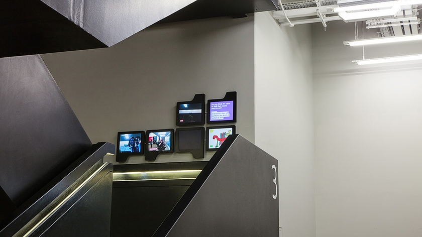
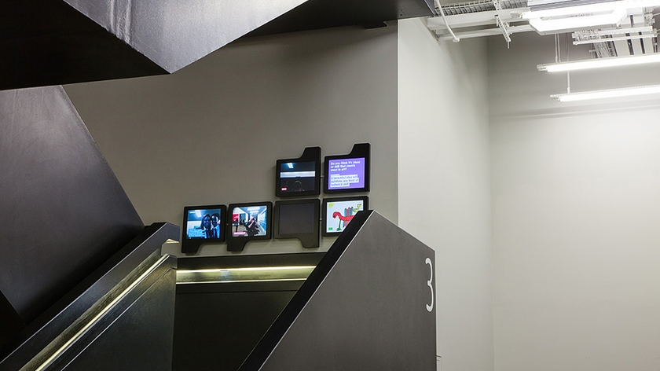
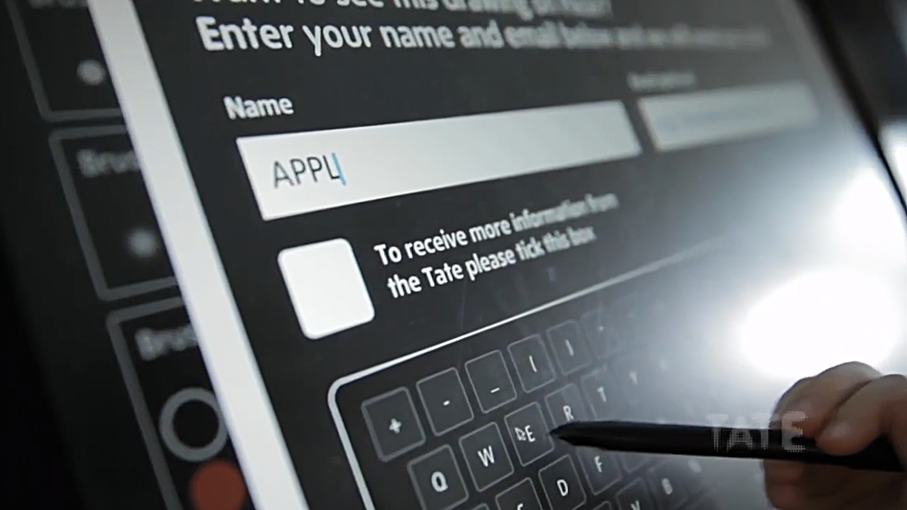
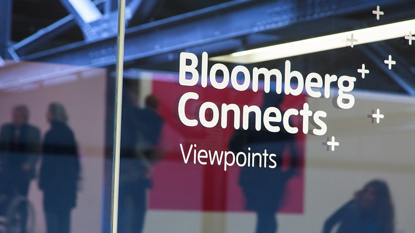
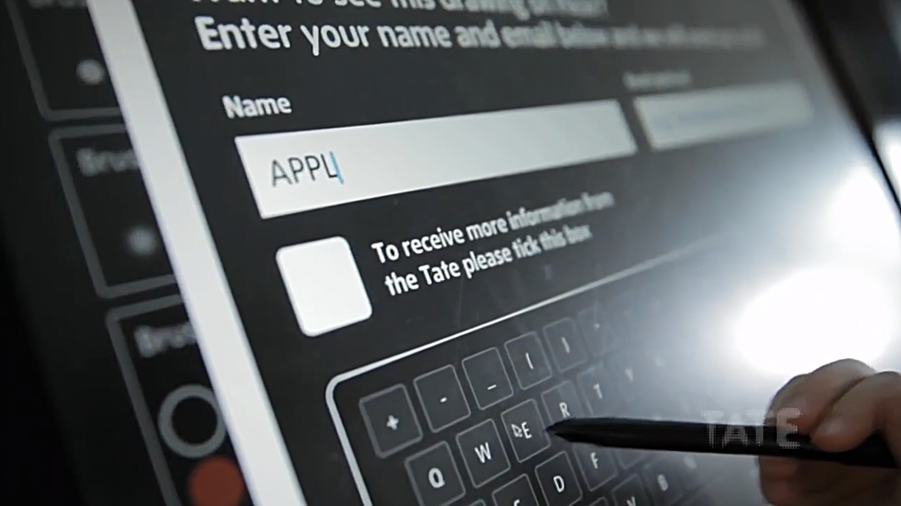
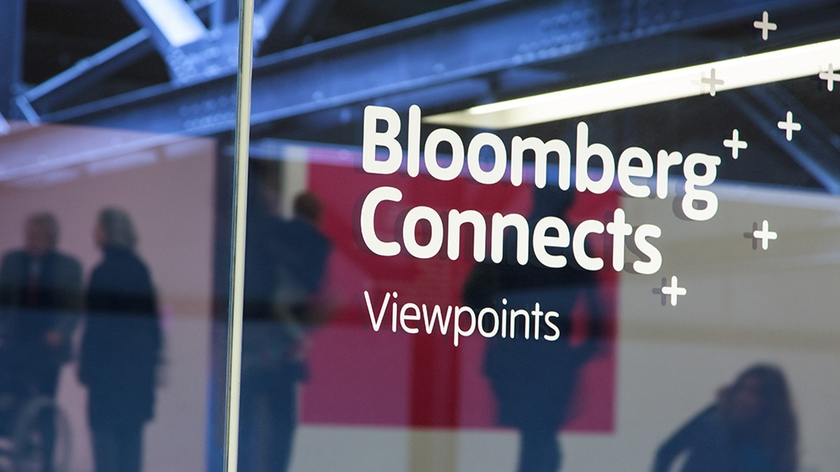

City Visualizer Concept
City Visualizer is an application prototype for a major real-estate company. It aims to show their property archive and construction progress of buildings located in different cities. I employ procedural modeling by generating a model of a city and its buildings based on data of OpenStreetMap with Houdini and Unity as the final implementation.
It will be installed multiple locations in the entrance floor of their headquarter building: Single 165” led display at the main reception hall and four 70” LCD displays at the elevator hall.
 


 


